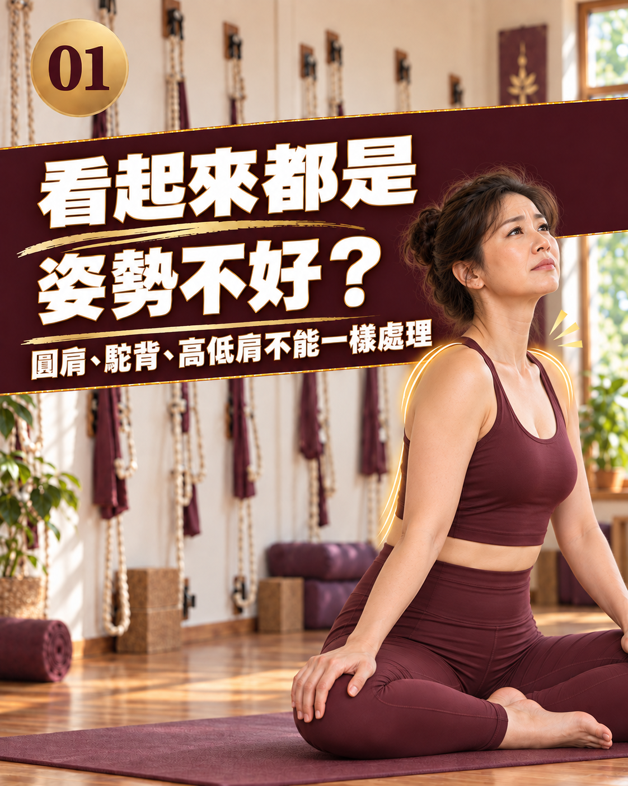
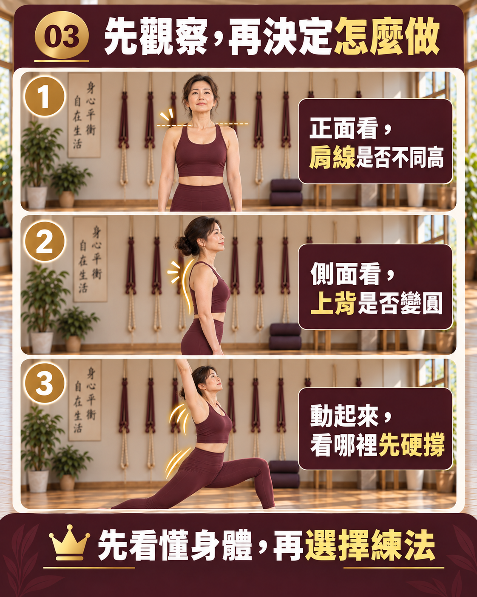

圓肩、駝背、高低肩一樣嗎？先做問題分流

- 外觀看似都是「姿勢不良」，但圓肩（前後向肩胛傾倒）、駝背（矢狀面脊椎過凸）、高低肩（冠狀面左右失衡）在解剖力學上完全是不同向度的問題。
- 高低肩往往不是肩膀本身的毛病，而是骨盆傾斜或脊椎代償引發的上行連鎖反映。
- 切忌拿同一套對稱的「開胸夾背操」套用在所有人身上；若存在左右非對稱問題，盲目夾背反而會加深身體扭轉。
- 先分清體態主要矛盾是前後軸還是左右軸，搭配 AI 體態檢測的幾何角度量化，才能擬定最安全精準的調整藍圖。
在照後鏡或合照中看到自己的身影，很多人第一眼會浮現這種感覺：「我肩膀好像太往前縮了」、「背看起來好駝」、「怎麼左邊肩膀比右邊高了一大截？」大部分人會把這些視覺印象全部混為一談，籠統地稱之為「體態不好」，接著照單全收網路上所有「美背、挺胸、消駝背」的教學影片。然而，圓肩、駝背與高低肩在人體三維運動學中，隸屬於截然不同的關節構造與受力平面。若連自己的核心問題出在哪個維度都沒搞清楚，一套動作做到底，往往只會讓身體代償得更嚴重。
三維空間解剖拆解：一張表看懂三大體態差異
人體的動作與排列是在三維空間中進行的。要把這三者分清楚，必須從解剖學的空間平面（Planes of Motion）來解析：

| 比較項目 | 圓肩（Rounded Shoulders） | 駝背（Thoracic Kyphosis） | 高低肩（Uneven Shoulders） |
|---|---|---|---|
| 主要受力空間維度 | 水平面與矢狀面（前後向失衡） | 矢狀面（前後垂直曲度失衡） | 冠狀面 / 正視面（左右對稱性失衡） |
| 核心受累解剖構造 | 肩胛胸壁關節、肩胛骨、肱骨頭 | 胸椎脊柱（T1 至 T12 椎體與椎間盤） | 肩帶肌群（提肩胛肌/斜方肌）、脊柱側彎或骨盆 |
| 最直觀的外觀特徵 | 肩膀向前向內旋轉，雙手垂放時手背朝前、虎口朝內 | 上背部呈圓弧隆起，胸骨下沉，常伴隨頸胸富貴包 | 左右兩側肩峰高度明顯不對稱，領口向單側滑落 |
| 典型誘發生活習慣 | 長期向前懸空滑手機、鍵盤打字、抱嬰兒 | 長時間癱坐在沙發上、低頭閱讀、胸椎活動度喪失 | 習慣性單肩背包包、三七步重心站立、慣用手側重勞損 |
| 錯誤硬練的風險 | 盲目用力夾背引發上斜方肌緊繃、越夾越聳肩 | 胸椎卡死下硬挺胸導致腰椎超伸下背痛與肋骨外翻 | 對稱夾背導致緊側更緊、弱側更弱，加劇脊椎旋轉 |
1. 圓肩：肩胛骨向前翻倒的「水平面」問題
圓肩的核心關鍵在於「肩胛骨的相對位置」。健康的肩胛骨應平貼於後背肋骨表面（約後傾 10 度）。然而，當前側的胸小肌與胸大肌短縮時，會像拉緊的纜繩把肩胛骨硬往前、往下傾倒（Anterior Tilt & Protraction），順帶將上臂的肱骨頭向前推擠出肩盂臼窩。
自我觀察要領：輕鬆自然站立，雙手自然垂放在身體兩側。若從鏡中看，你的大拇指是朝向正前方，代表肩膀處於中立位；若手背已經旋轉朝向正前方、虎口完全朝向大腿內側甚至後方，這就是典型的圓肩旋前體態。
2. 駝背：胸椎過度後凸的「脊椎矢狀面」問題
駝背的核心問題不在肩膀，而在「胸椎脊柱骨的生理彎曲」。人體的胸椎原本就有生理性後凸，但正常曲度在 20 至 40 度之間；一旦超過 45 度，在醫學上便屬於胸椎過度後凸（Hyperkyphosis）。
長年久坐會使胸椎椎間盤前方持續受壓，周圍前縱韌帶硬化縮短，背部多裂肌失憶萎縮。許多人把駝背與圓肩混為一談，但臨床上有人「雖然肩膀往前，但上背脊柱其實很平」；也有人「肩膀骨頭位置正常，但中上背整片圓鼓隆起」。兩者的伸展與支撐重點完全不同。
3. 高低肩：非對稱側彎或骨盆傾斜的「冠狀面」反映
高低肩是這三者中最不能用「對稱開胸操」解決的棘手狀況！因為高低肩是身體在正視面上產生了「左右不平衡」。
更重要的是：高低肩往往只是末端結果，真正的源頭常在底下的骨盆！
- 當我們習慣站三七步、翹二郎腿，使單側骨盆上提或產生功能性長短腳時，薦椎底座傾斜。
- 大腦為了維持視線水平，會驅使胸椎向另一側側彎補償，最終迫使兩邊肩胛骨高度產生落差。
- 此時若只在肩膀做拉伸，而沒有校準骨盆地基，高低肩絕對不可能真正平衡。

為什麼「同一套動作」可能會害了你？
試想：一位同時擁有「圓肩」與「右側高低肩（右肩顯著高於左肩）」的練習者，若照著網路影片每天做「雙手均勻向後用力夾背」，會發生什麼事？
右側已經過度痙攣的上斜方肌與提肩胛肌，會在動作中搶先發力代償，把右肩提得更高；而左側處於被動拉長的肌肉依然無法獲得有效刺激。幾週下來，圓肩不但沒有改善，高低肩反而加劇，甚至引發右側單邊後頸劇烈偏頭痛！
這就是為什麼「分流評估」永遠是體態調整最不可省略的第一步。
AI 體態檢測如何為你的體態精準導航？
為了終結盲目摸索與猜測，鑫彥瑜珈引進 AI 體態檢測系統，透過現場客觀拍攝與 2D 幾何力線演算：
- 三維多向度量化：精準測量兩側肩峰水平高度差（公釐級分析高低肩）、耳肩前後垂直落差（量化頭前傾）與骨盆兩側傾斜角度。
- 由專業老師當面解讀：AI 產出的是客觀數據，而真正核心的價值在於老師面對面為您拆解：「你的高低肩究竟是源自骨盆歪斜，還是單純背書包的肌張力代償？」從而為您分流出最安全、合適的先後調整順序。
醫療專科鑑別：必須立即就醫的紅旗警訊
體態分流中，若發現下列任何一項器質性病變徵兆，請立即掛號小兒骨科、脊椎外科或神經專科門診：
- 結構性脊椎側彎警訊：做亞當氏前彎測試（Adam's Forward Bend Test）時，背部兩側出現肉眼可見的明顯高低隆起（Rib Hump，代表椎體旋轉畸形，需拍攝全脊椎 X 光評估 Cobb 角）。
- 急遽惡化的軀幹傾斜：成年人在短時間內突然身體向單側嚴重傾斜，且伴隨單側下肢麻木刺痛、垂足或步態踉蹌。
- 夜間靜止劇痛與消瘦：背部固定某個椎體深處持續劇痛，平躺無法緩解，伴隨莫名發燒或體重急速減輕。
不再盲目跟練，先看懂自己的身體密碼
分不清自己到底屬於哪種體態嗎？預約現場 AI 體態檢測，透過專業幾何力線分析看清代償源頭，由老師當面為您量身解讀專屬的調整策略。
預約首次 NT$299 AI 體態檢測本文為體態幾何結構與運動力學衛教知識分享，並非醫療行為，亦不提供任何醫療診斷或療效承諾。若有結構性脊椎側彎疑慮、劇烈背痛、神經放射麻痛或軀幹急速變形，請務必諮詢骨科、脊椎外科或復健專科醫師。
常見問題
圓肩、駝背與高低肩，在解剖維度上有什麼根本差異？
三者發生在不同的空間平面上：圓肩是「水平面與矢狀面的肩胛骨前傾與旋前」，手背自然向前；駝背是「矢狀面的胸椎脊柱過度後凸」，上背隆起如龜殼；高低肩則是「冠狀面（正視面）的左右高度失衡」，往往牽涉單側肌肉緊繃、脊椎側彎或骨盆左右傾斜。三者成因不同，不可混為一談。
為什麼不能拿同一套「開胸夾背操」同時解決這三種問題？
因為對稱性的開胸夾背動作，只能針對前後失衡（如單純圓肩）；如果合併有高低肩或側彎，左右兩側肌群的張力本就處於「一側痙攣短縮、另一側拉長無力」的非對稱狀態。此時若做對稱訓練，緊側依舊搶先代償、弱側無法有效受力，反而容易加劇左右失衡與旋轉代償。
高低肩的源頭，有可能根本不在肩膀而在骨盆嗎？
非常有機會。人體骨骼動力鏈具有上行傳導特性：當日常習慣站三七步、翹二郎腿造成骨盆左右傾斜或結構性長短腳時，薦椎底座產生歪斜；為了維持雙眼視線平視前方，胸椎必須向對側代償側彎，最終在頂端表現為兩側肩峰高低不等。只治肩膀不調骨盆地基，高低肩自然難以維持。
什麼樣的情況適合先做 AI 體態檢測，而不是盲目上課？
如果你同時觀察到自己有圓肩、駝背，且左右肩膀或骨盆高度明顯不對稱；或是一刻意站直就感到腰椎痠痛、聳肩更累；或是練習網路動作後感覺左右受力極不平均。此時非常適合透過 AI 體態檢測的 2D 幾何力線客觀量化各關節角度，讓老師當面解讀，分清調整先後順序。
出現哪些伴隨高低肩或背部異常的警訊時，必須立刻就醫？
若青少年在短時間內出現背部明顯不對稱隆起（亞當氏前彎測試胸背兩側高低落差顯著，需排查結構性脊椎側彎）；成年人突然出現進行性軀幹歪斜伴隨單側下肢放射麻痛、無力垂足；或背部深處伴隨不明原因劇烈疼痛、胸悶氣短，請務必立即掛號小兒骨科、脊椎外科或神經專科評估。